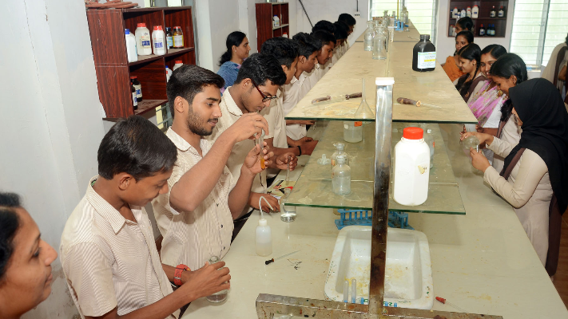
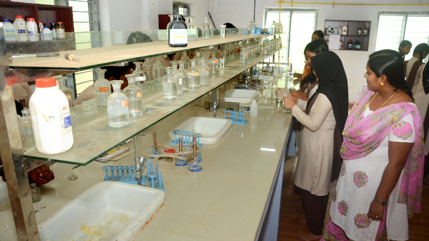
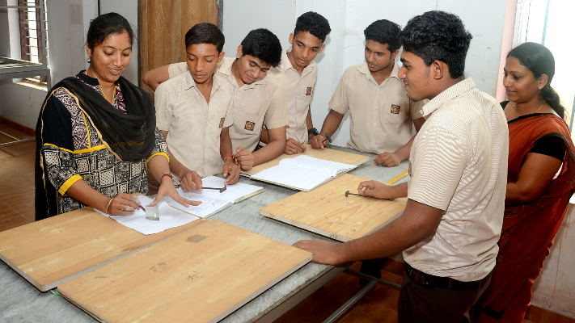
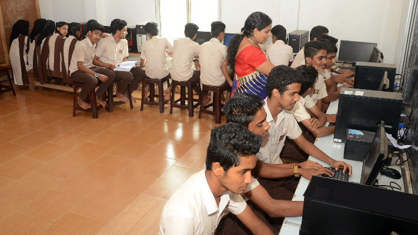
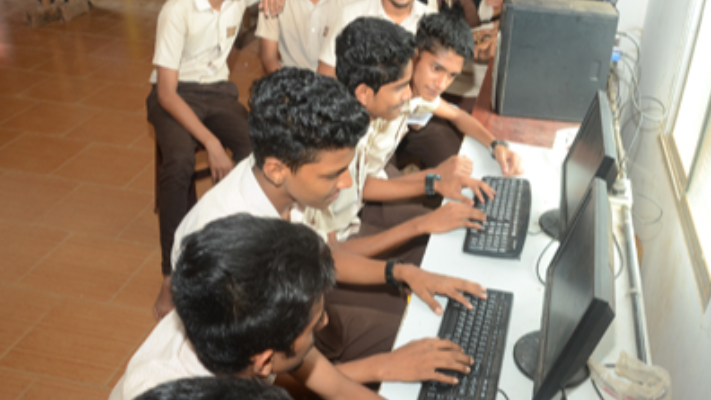

Students can take part in practical learning and experiments.

Science Laboratory

Students Doing Practical Work

Practical Learning
The computer laboratory supports practical Computer Science learning.

Computer Laboratory

Students Using Computers
Computer Science Practical Session